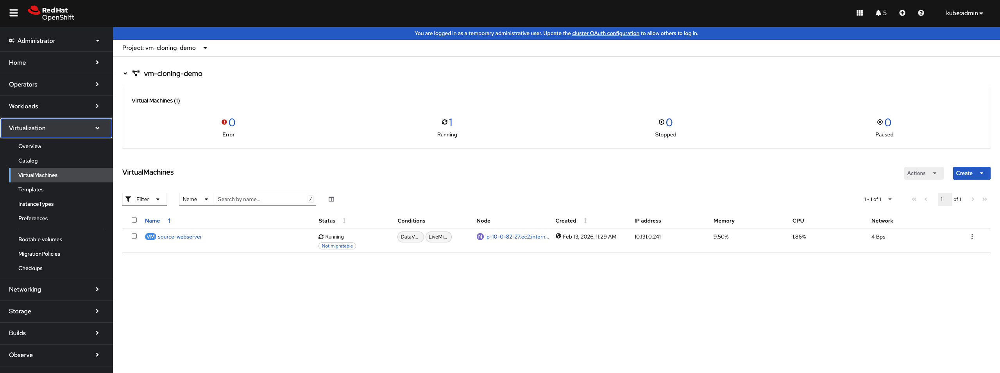
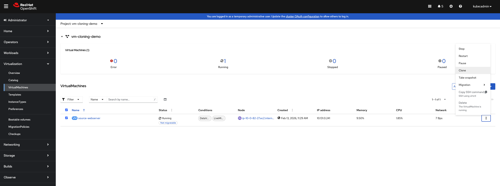
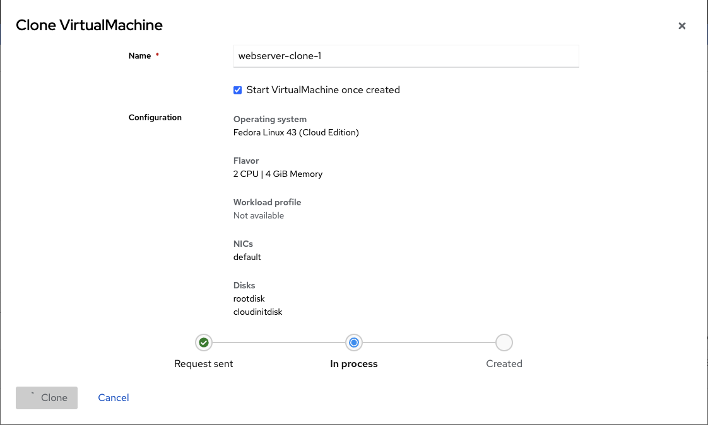

仮想マシンのクローン作成による迅速なデプロイ
概要
このチュートリアルでは、OpenShift Virtualization で既存の仮想マシンをクローン作成して、同じかカスタマイズされた仮想マシンインスタンスを迅速にデプロイする方法を示します。VM クローン作成は、既存の VM の完全なディスクコンテンツ、構成、およびインストールソフトウェアを含む新しい VM のコピーを作成します。これにより、環境の迅速なプロビジョニングが可能になります。
仮想マシンのクローン作成とは何か
仮想マシンのクローン作成は、既存の VM を複製して新しい VM を作成します。OpenShift Virtualization は、以下の 2 つの主な方法で VM をクローン作成します。
-
Web コンソールクローン作成: VM のクローン作成を簡単に行うポイント・アンド・クリックインターフェース
-
CLI ベースのクローン作成: PVC のクローン作成と新しい VM の作成を手動で行うプロセス
仮想マシンのクローン作成の主な利点:
-
事前構成された環境の迅速なデプロイ
-
インスタンス間でソフトウェアと構成の一貫性
-
開発とテストワークフローの加速
-
同じワークロードの迅速なスケールアウト
-
デプロイからプロダクション準備状態への時間の短縮
クローン作成とゴールデンイメージの比較
両方のアプローチは、VM の迅速なデプロイを可能にしますが、異なる目的を持ちます。
| アスペクト | 仮想マシンのクローン作成 | ゴールデンイメージ |
|---|---|---|
使用ケース |
特定の VM とそのデータと状態を複製する |
多数の VM に対する標準化された構成のテンプレート |
カスタマイズ |
クローンはソース VM のデータを保持し、cloud-init を使用してカスタマイズできます |
各 VM はテンプレートから新規で始まります |
データの保存 |
ソース VM のすべてのデータを保持します |
ベース構成のみを含みます |
ソース状態 |
実行中または停止中の VM からクローンを作成できます |
ソースは、一般化されたイメージです |
典型的なシナリオ |
構成された開発環境のクローン作成（テスト用） |
同じベース設定で複数の Web サーバーのデプロイ |
前提条件
-
OpenShift 4.18 以上に OpenShift Virtualization オペレーターがインストールされている
-
OpenShift Web コンソールまたは CLI ツール (
oc,virtctl) のアクセス権 -
ボリュームクローン作成をサポートするストレージクラス
-
クローンする VM が 1 つ以上あります（または作成します）
-
PersistentVolumeClaims (PVC) についての基本的な理解
クローン作成方法の理解
OpenShift Virtualization は、VM をクローン作成するための 2 つのアプローチを提供します。
Web コンソールクローン作成（推奨）
Web コンソールは、クローン作成のストリームライン化された経験を提供します。
-
PVC のクローン作成を自動的に処理します
-
クローンされたディスクを持つ新しい VM を作成します
-
実行中または停止中の VM からクローンを作成できます
-
VM の構成（CPU、メモリ、ネットワーク）を保持します
Web コンソールを使用して仮想マシンをクローン作成する
Web コンソールは、VM をクローン作成するための最も簡単な方法です。
セットアップ：ソース VM の作成
まず、名前空間とソース VM を作成します。
oc create namespace vm-cloning-demoソース VM に nginx を事前にインストールする VM をデプロイします。
注意: この例の cloud-init パスワードは、デモのためのものです。実際のプロダクション環境では、強力で一意のパスワードまたは SSH キー認証を使用してください。
apiVersion: kubevirt.io/v1
kind: VirtualMachine
metadata:
name: source-webserver
namespace: vm-cloning-demo
spec:
dataVolumeTemplates:
- apiVersion: cdi.kubevirt.io/v1beta1
kind: DataVolume
metadata:
name: source-webserver-disk
spec:
sourceRef:
kind: DataSource
name: fedora
namespace: openshift-virtualization-os-images
storage:
resources:
requests:
storage: 30Gi
runStrategy: RerunOnFailure
template:
metadata:
labels:
kubevirt.io/domain: source-webserver
spec:
domain:
cpu:
cores: 2
devices:
disks:
- disk:
bus: virtio
name: rootdisk
- disk:
bus: virtio
name: cloudinitdisk
interfaces:
- masquerade: {}
name: default
rng: {}
machine:
type: pc-q35-rhel9.4.0
memory:
guest: 4Gi
networks:
- name: default
pod: {}
volumes:
- dataVolume:
name: source-webserver-disk
name: rootdisk
- cloudInitNoCloud:
userData: |-
#cloud-config
user: fedora
password: fedora123
chpasswd: { expire: false }
ssh_pwauth: true
runcmd:
- dnf install -y nginx
- systemctl enable --now nginx
- echo "<h1>Source Webserver VM</h1><p>Hostname: $(hostname)</p>" > /usr/share/nginx/html/index.html
- firewall-cmd --permanent --add-service=http
- firewall-cmd --reload
name: cloudinitdiskVM をデプロイします。
oc apply -f source-webserver-vm.yamlVM が実行中になるまで待ちます。
oc get vmi -n vm-cloning-demoWeb コンソールを使用して VM をクローン作成する
OpenShift Web コンソールを使用して VM をクローン作成するには、以下の手順に従います。
-
仮想化 → 仮想マシン に移動します

-
クローンする VM (
source-webserver) を見つけます -
VM の ⋮ (アクションメニュー) 側にある クローン をクリックします

-
クローン仮想マシン ダイアログで:
-
新しい VM に対する名前を入力します（例:
webserver-clone-1） -
新しい VM が作成されたら自動的に開始する場合は、仮想マシンの作成後に開始 をチェックします
-
構成の詳細（オペレーティングシステム、CPU、メモリ、NIC、ディスク）を確認します
-
-
クローン をクリックします

Web コンソールは、以下のことを行います。
-
ソース VM の PVC をクローンします
-
クローンされたディスクを持つ新しい VM を作成します
-
VM の構成（CPU、メモリ、ネットワーク）を保持します
-
開始オプションを選択した場合は、VM を開始します
仮想マシンのリストでクローンの進捗を監視します。PVC クローンが完了するまで、クローンは "プロビジョニング" に表示されます。

CLI を使用した仮想マシンのクローン作成
自動化、カスタマイズ、または名前空間間クローン作成のために、CLI メソッドを使用します。
方法 1: PVC をクローンし、次に VM を作成（推奨）
推奨される CLI アプローチです。まず、ソース VM の PVC を識別します。
oc get pvc -n vm-cloning-demo出力は以下のようになります。
NAME STATUS VOLUME CAPACITY ACCESS MODES STORAGECLASS AGE
source-webserver-disk Bound pvc-1234abcd-5678-efgh-9012-ijklmnop3456 30Gi RWO lvms-vg1 10mソース PVC をクローンするスタンドアロン DataVolumeを作成します。
apiVersion: cdi.kubevirt.io/v1beta1
kind: DataVolume
metadata:
name: webserver-clone-2-disk
namespace: vm-cloning-demo
annotations:
cdi.kubevirt.io/storage.bind.immediate.requested: "true" (1)
spec:
source:
pvc:
name: source-webserver-disk
namespace: vm-cloning-demo
storage:
accessModes:
- ReadWriteOnce
resources:
requests:
storage: 30Gi
storageClassName: gp3-csi (2)| 1 | WaitForFirstConsumer バインディングモードを使用するストレージクラスの場合、このアノテーションは必須です。 |
| 2 | ストレージクラスを指定することはオプションです。指定されていない場合、ソース PVC から継承されます。 |
重要: cdi.kubevirt.io/storage.bind.immediate.requested: "true" アノテーションは、WaitForFirstConsumer バインディングモードを使用するストレージクラス (例: AWS EBS gp3-csi、Azure Disk、GCP PD など) の場合、DataVolume が PendingPopulation 状態に残るのを防ぐために重要です。これがないと、DataVolume は VM がそれを消費するまで PendingPopulation 状態に残ります。
DataVolume を適用します。
oc apply -f clone-datavolume.yamlクローンの進捗を監視します。
oc get dv webserver-clone-2-disk -n vm-cloning-demo -w以下のようなフェーズが表示されます。
NAME PHASE PROGRESS RESTARTS AGE
webserver-clone-2-disk CloneFromSnapshotSourceInProgress N/A 4s
webserver-clone-2-disk PrepClaimInProgress N/A 68s
webserver-clone-2-disk RebindInProgress N/A 78s
webserver-clone-2-disk Succeeded 100.0% 79sDataVolume が Succeeded になったら、クローンされたディスクを使用する新しい VMを作成します。
apiVersion: kubevirt.io/v1
kind: VirtualMachine
metadata:
name: webserver-clone-2
namespace: vm-cloning-demo
spec:
runStrategy: Manual
template:
metadata:
labels:
kubevirt.io/domain: webserver-clone-2
spec:
domain:
cpu:
cores: 2
devices:
disks:
- disk:
bus: virtio
name: rootdisk
interfaces:
- masquerade: {}
name: default
rng: {}
machine:
type: pc-q35-rhel9.4.0
memory:
guest: 4Gi
networks:
- name: default
pod: {}
volumes:
- name: rootdisk
persistentVolumeClaim:
claimName: webserver-clone-2-diskVM を適用します。
oc apply -f vm-from-cloned-pvc.yamlVM を開始します。
virtctl start webserver-clone-2 -n vm-cloning-demo方法 2: 仮想マシンのクローン作成（代替方法）
注: このアプローチは手動の編集が必要で、推奨されていません。推奨される方法は上記の方法 1 を使用してください。より信頼性の高いもので、トラブルシューティングが容易です。
ソース VM を停止してクリーンなクローンを作成します。
virtctl stop source-webserver -n vm-cloning-demoVM が停止するのを待ちます。
oc get vm source-webserver -n vm-cloning-demoソース VM の構成をエクスポートします。
oc get vm source-webserver -n vm-cloning-demo -o yaml > clone-base.yamlclone-base.yaml を編集してクローンを作成します。以下の変更を行う必要があります。
1. VM の名前を変更します:
metadata:
name: source-webserver # 変更: webserver-manual-clone
namespace: vm-cloning-demo2. DataVolume の名前を更新し、PVC ソースを追加します:
spec:
dataVolumeTemplates:
- apiVersion: cdi.kubevirt.io/v1beta1
kind: DataVolume
metadata:
name: source-webserver-disk # 変更: webserver-manual-clone-disk
spec:
# オリジナルの sourceRef セクションを削除します
# 代わりに以下のように追加します:
source:
pvc:
name: source-webserver-disk
namespace: vm-cloning-demo
storage:
resources:
requests:
storage: 30Gi3. ラベルとドメイン名を更新します:
spec:
template:
metadata:
labels:
kubevirt.io/domain: source-webserver # 変更: webserver-manual-clone
spec:
domain:
# ... その他の構成
volumes:
- dataVolume:
name: source-webserver-disk # 変更: webserver-manual-clone-disk
name: rootdisk4. 不要なフィールドを削除します:
自動生成されるメタデータフィールドを削除します。
-
metadata.uid -
metadata.resourceVersion -
metadata.creationTimestamp -
metadata.generation -
statusセクション（全体）
5. MAC アドレスを削除します（重要）:
ネットワークインターフェースの macAddress フィールドを削除して、自動割り当てを可能にします。
spec:
template:
spec:
domain:
devices:
interfaces:
- masquerade: {}
name: default
macAddress: "52:54:00:xx:xx:xx" # 削除MAC アドレスを削除しないと、以下のエラーが発生します。
Failed to allocate mac to the vm object: failed to allocate requested mac address
変更を加えた後、YAML を適用します。
oc apply -f clone-base.yamlクラウドイニシエイターの使用によるクローンされた仮想マシンのカスタマイズ
クローンされた仮想マシンは、ソースからデータ（ホスト名と認証情報を含む）を継承します。クラウドイニシエイターを使用してクローンをカスタマイズします。
新しいホスト名とパスワードでクローン作成
方法 2 のように DataVolume をクローンします。
cat <<EOF | oc apply -f -
apiVersion: cdi.kubevirt.io/v1beta1
kind: DataVolume
metadata:
name: webserver-custom-disk
namespace: vm-cloning-demo
annotations:
cdi.kubevirt.io/storage.bind.immediate.requested: "true"
spec:
source:
pvc:
name: source-webserver-disk
namespace: vm-cloning-demo
storage:
accessModes:
- ReadWriteOnce
resources:
requests:
storage: 30Gi
EOFクローンが完了するまで待ちます。
oc get dv webserver-custom-disk -n vm-cloning-demo -wクラウドイニシエイターのカスタマイズを使用して VM を作成します。
apiVersion: kubevirt.io/v1
kind: VirtualMachine
metadata:
name: webserver-custom
namespace: vm-cloning-demo
spec:
runStrategy: Manual
template:
metadata:
labels:
kubevirt.io/domain: webserver-custom
spec:
domain:
cpu:
cores: 2
devices:
disks:
- disk:
bus: virtio
name: rootdisk
- disk:
bus: virtio
name: cloudinitdisk
interfaces:
- masquerade: {}
name: default
rng: {}
machine:
type: pc-q35-rhel9.4.0
memory:
guest: 4Gi
networks:
- name: default
pod: {}
volumes:
- name: rootdisk
persistentVolumeClaim:
claimName: webserver-custom-disk
- cloudInitNoCloud:
userData: |-
#cloud-config
hostname: webserver-custom
fqdn: webserver-custom.local
manage_etc_hosts: true
password: fedora123
chpasswd: { expire: false }
ssh_pwauth: true
runcmd:
- hostnamectl set-hostname webserver-custom
- echo "<h1>Customized Clone</h1><p>Hostname: $(hostname)</p>" > /usr/share/nginx/html/index.html
- systemctl restart nginx
name: cloudinitdiskこのクラウドイニシエイターの構成:
-
ホスト名を
webserver-customに設定します -
fedora ユーザーのパスワードを設定します
-
nginx のインストールを継承します
-
nginx のようなウェルカムページを更新します
適用して開始します。
oc apply -f cloned-vm-with-cloudinit.yaml
virtctl start webserver-custom -n vm-cloning-demoカスタマイズを確認します。
virtctl console webserver-custom -n vm-cloning-demoVM 内で:
hostname
# 出力: webserver-custom
systemctl status nginx
# nginx が実行中 (ソースから継承) を示します
curl localhost
# カスタム HTML を表示します名前空間間でのクローン作成
開発、テスト、プロダクションなどの環境を分離するために、異なる名前空間に VM をクローン作成します。
名前空間間クローン作成用の RBAC の設定
ターゲット名前空間のサービスアカウントがソース名前空間の PVC にアクセスできるようにするために、RBAC を設定します。
apiVersion: rbac.authorization.k8s.io/v1
kind: Role
metadata:
name: datavolume-cloner
namespace: vm-cloning-demo
rules:
- apiGroups: [""]
resources: ["persistentvolumeclaims"]
verbs: ["get", "list"]
- apiGroups: ["cdi.kubevirt.io"]
resources: ["datavolumes"]
verbs: ["get", "list"]
---
apiVersion: rbac.authorization.k8s.io/v1
kind: RoleBinding
metadata:
name: allow-clone-from-demo
namespace: vm-cloning-demo
roleRef:
apiGroup: rbac.authorization.k8s.io
kind: Role
name: datavolume-cloner
subjects:
- kind: ServiceAccount
name: default
namespace: vm-cloning-productionRBAC を適用します。
oc apply -f cross-namespace-clone-rbac.yaml名前空間間クローン作成
プロダクション名空間にある DataVolume を作成し、デモ名空間からクローンします。
apiVersion: cdi.kubevirt.io/v1beta1
kind: DataVolume
metadata:
name: webserver-production-disk
namespace: vm-cloning-production
annotations:
cdi.kubevirt.io/storage.bind.immediate.requested: "true"
spec:
source:
pvc:
name: source-webserver-disk
namespace: vm-cloning-demo
storage:
accessModes:
- ReadWriteOnce
resources:
requests:
storage: 30GiDataVolume を適用します。
oc apply -f cross-namespace-clone-datavolume.yamlクローンの進捗を監視します。
oc get dv -n vm-cloning-production -wプロダクション VM を作成します。
apiVersion: kubevirt.io/v1
kind: VirtualMachine
metadata:
name: webserver-production
namespace: vm-cloning-production
labels:
environment: production
spec:
runStrategy: Manual
template:
metadata:
labels:
kubevirt.io/domain: webserver-production
spec:
domain:
cpu:
cores: 4
devices:
disks:
- disk:
bus: virtio
name: rootdisk
- disk:
bus: virtio
name: cloudinitdisk
interfaces:
- masquerade: {}
name: default
rng: {}
machine:
type: pc-q35-rhel9.4.0
memory:
guest: 8Gi
networks:
- name: default
pod: {}
volumes:
- name: rootdisk
persistentVolumeClaim:
claimName: webserver-production-disk
- cloudInitNoCloud:
userData: |-
#cloud-config
hostname: webserver-prod
fqdn: webserver-prod.production.local
manage_etc_hosts: true
password: fedora123
chpasswd: { expire: false }
ssh_pwauth: true
runcmd:
- hostnamectl set-hostname webserver-prod
- echo "<h1>Production Webserver</h1><p>Environment: Production</p>" > /usr/share/nginx/html/index.html
- systemctl restart nginx
name: cloudinitdiskプロダクション用の主な違い:
-
異なる名前空間
-
リソースが増えます（4 コア、8Gi RAM）
-
プロダクション固有のラベル
-
アクセスのためのパスワードを設定します
-
プロダクション固有のカスタマイズ
適用して開始します。
oc apply -f cloned-webserver-production.yaml
virtctl start webserver-production -n vm-cloning-productionクローン作成のパフォーマンス
クローン作成の速度は、使用しているストレージによって異なります。
-
スマートクローン作成（CSI スナップショット）: 非常に速く、ストレージスナップショットを使用します
-
Ceph RBD、AWS EBS、Azure Disk、GCP PD
-
フェーズ:
SnapshotForSmartCloneInProgress→SmartClonePVCInProgress
-
-
ホストアシストクローン作成: より遅く、ポッドを介してデータをコピーします
-
スナップショットサポートがないストレージクラスの任意のもの
-
フェーズ:
CloneInProgressに進捗パーセンテージ
-
クローン作成の方法を確認します。
oc get dv <datavolume-name> -n <namespace> -o yaml | grep cloneType出力:
cdi.kubevirt.io/cloneType: snapshot # スマートクローン作成
# または
cdi.kubevirt.io/cloneType: copy # ホストアシストクローン作成ストレージ領域の要件
各クローンには、ソースボリュームサイズの完全なストレージ割り当てが必要です。
-
クローンは、ソースボリュームの独立したコピーではなく、スナップショットです
-
各クローンには、ソースボリュームサイズの同じストレージが必要です
-
計画する際の容量: (クローン数 × ソースボリュームサイズ)
-
名前空間のクォータとストレージクラスの容量を確認してください
利用可能なストレージを確認します。
oc get sc
oc describe sc <storage-class-name>ストレージのベストプラクティス
-
スナップショットサポートを持つストレージクラスを使用すると、クローン作成が速くなります
-
クローン作成前に十分なストレージ容量があることを確認してください
-
名前空間のストレージ使用量を監視してください
-
定期的に不要なクローンを削除してください
-
名前空間のストレージクォータを考慮してください
クローン作成の確認
DataVolume の状態を確認します。
oc get dv -n vm-cloning-demo成功したクローンには、Succeeded が表示されます。
NAME PHASE PROGRESS AGE
webserver-custom-disk Succeeded N/A 5mクローン作成のイベントの確認
クローン作成のイベントを表示します。
oc describe dv <datavolume-name> -n <namespace>クローン作成の進捗を示すイベントを探します。
Events:
Type Reason Age From Message
---- ------ ---- ---- -------
Normal CloneInProgress 5m datavolume-controller Cloning from vm-cloning-demo/source-webserver-disk in progress
Normal CloneSucceeded 2m datavolume-controller Successfully cloned from vm-cloning-demo/source-webserver-diskカスタマイズの確認
VM コンソールにアクセスします。
virtctl console <vm-name> -n <namespace>VM 内で:
# ホスト名を確認
hostname
# ソース VM からのソフトウェアを確認
systemctl status nginx
# cloud-init の状態を確認
cloud-init status
# cloud-init ログを表示
sudo cat /var/log/cloud-init-output.log
# カスタマイズされた場合は、マシン ID を確認
cat /etc/machine-id問題: クローンが "Provisioning" または "CloneInProgress" に停止している
問題: DataVolume が CloneInProgress に長時間残っています。
可能な原因: * 大きなソースボリューム * 遅いストレージまたはネットワーク * 大きなボリュームのホストアシストクローン作成
解決策:
# クローンイベントを確認
oc describe dv <datavolume-name> -n <namespace>
# CDI ポッドを確認
oc get pods -n <namespace> | grep cdi
# CDI ログを表示
oc logs <cdi-pod> -n <namespace>大きなボリュームの場合、ホストアシストクローン作成は時間がかかります。これは予想される振る舞いです。